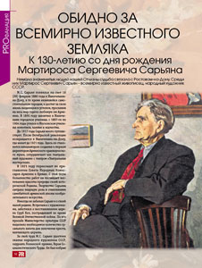
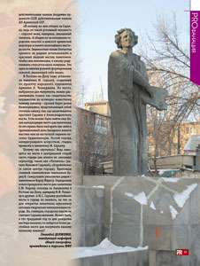

Геннадий Долженко
Персональный сайт
Туризм. Рекреационная география. Экскурсоведение
Меню
Главная
Книги
Статьи
Благодарности
Контакты
Книга мнений
Студенту
«Заключения» дипломных работ
Доклады на защите
Науч. работа студентов
Произв. практика
Учебный процесс
Защита дип. работ. 2011 г.
Заметки
Туризмоведение Конференция 2011
Абитуриенту
о специальности
«Туризм»
Новая генерация студентов
Обидно за всемирно известного земляка // Ежемесячный информационный журнал "ПроРостов". 2010 г. №2 (42).

Открыть полное изображение →

Открыть полное изображение →